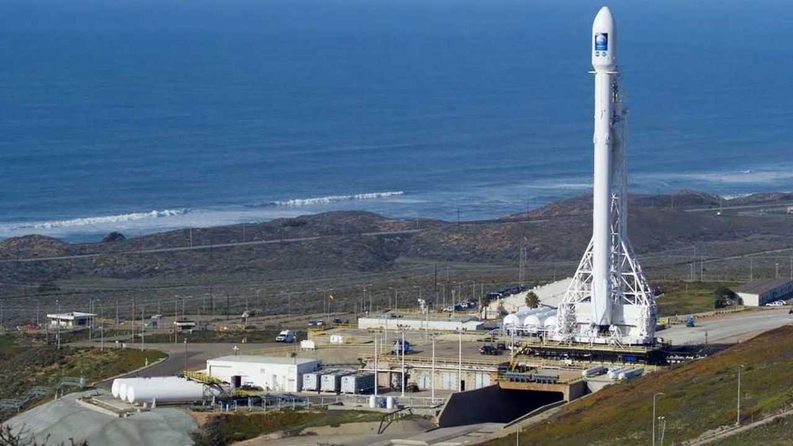

SpaceNews
La fusée réutilisable : Une révolution dans l'industrie spatiale
Introduction
Les premières recherches sur les fusées datent du 19e siècle, pourtant le premier vol de fusée à seulement eu lieu en 1947. Beaucoup d’essais ont suivi, avant d’obtenir des résultats concluants (Mercury-Redstone, Apollo 11…) Récemment, et pour des raisons écologiques et économiques, une nouvelle forme de fusée a été inaugurée par SpaceX : la fusée réutilisable. Nous allons vous parler de cette nouvelle innovation qui peut révolutionner l’univers spatial !

Cliquez sur la fusée pour découvrir la Falcon 9 !
Histoire et contexte
Elon Musk est à la tête de SpaceX, qui est une entreprise américaine axée dans le domaine de l’astronautique et du vol spatial. Le lanceur Falcon 9 est lancé pour la première fois en juin 2010. C’est une fusée partiellement réutilisable. Son moteur Merlin est un moteur-fusée utilisé également sur la fusée Falcon 1. Il a été créé par la même société américaine SpaceX. Selon les statistiques de SpaceX, les lanceurs Falcon 9 ont lancé 127 satellites (exemple : Starlink) et participé à 135 missions complètes, avec seulement deux échecs. La Falcon Heavy, une version plus lourde et plus puissante de la Falcon 9 n’a effectué que trois missions jusqu’à présent, mais d’autres projets sont prévus pour l’avenir.
Mais alors, dans quel but ces lanceurs réutilisables ont-ils été conçus? Il faut savoir que la Nasa a arrêté la navette spatiale puisque celle-ci était trop chère et dangereuse. La Nasa a donc créé un programme, le Commercial Crew Development, où ils donnent de l’argent à des entreprises pour qu’elles conçoivent des fusées permettant de se rendre jusqu’à l'ISS. C’est ainsi que SpaceX envoie - environ tous les 6 mois - une équipe d’astronautes vers l’ISS. Par ailleurs, les fusées réutilisables sont le futur de l’aérospatial. Cela s’inscrit dans une démarche de développement durable. Économiquement, puisque le coût de construction sera moindre, mais aussi écologiquement car certains matériaux utilisés pour la création de ces fusées sont rares et peuvent être néfastes envers la planète. SpaceX travaille désormais sur sa fusée Starship, entièrement réutilisable, destinée à voyager vers la Lune. De plus, d'ici 2050, le patron de SpaceX a l'intention de coloniser Mars.
